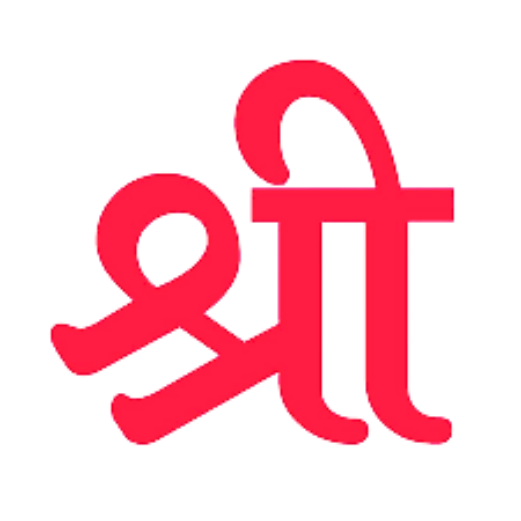

|| ॐ ऐं ह्रीं क्लीं चामुण्डायै विच्चे ||

सर्वमंगल मांगल्ये शिवे सर्वार्थ साधिके |
शरण्ये त्र्यंबके गौरी नारायणि नमोऽस्तुते ||
ઈતિહાસ
ઉત્તર અમેરિકામાં એક નોંધપાત્ર ગુજરાતી બોલનાર વસ્તી, ખાસ કરીને ન્યુ યોર્ક શહેર મહાનગર વિસ્તાર અને ગ્રેટર ટોરોન્ટો વિસ્તારમાં, અસ્તિત્વ ધરાવે છે, જે અનુક્રમે ૧,૦૦,૦૦૦થી વધુ અને ૭૫,૦૦૦થી વધુ વક્તાઓ ધરાવે છે. એ સિવાય એ અમેરિકા અને કેનેડાના મોટાભાગના મહાનગર વિસ્તારોમાં પણ અસ્તિત્વમાં છે. ૨૦૧૧ની વસતિ ગણતરી મુજબ, ગ્રેટર ટૉરન્ટો વિસ્તારના ગુજરાતી સત્તરમી સૌથી વધુ બોલાતી ભાષા છે, અને હિન્દુસ્તાની (હિન્દી-ઉર્દૂ), પંજાબી અને તમિલ પછીનીઅને તમિલ પછીની ચોથી સૌથી વધુ બોલાતી દક્ષિણ એશિયન ભાષા છે.
ઉત્તર અમેરિકામાં એક નોંધપાત્ર ગુજરાતી બોલનાર વસ્તી, ખાસ કરીને ન્યુ યોર્ક શહેર મહાનગર વિસ્તાર અને ગ્રેટર ટોરોન્ટો વિસ્તારમાં, અસ્તિત્વ ધરાવે છે, જે અનુક્રમે ૧,૦૦,૦૦૦થી વધુ અને ૭૫,૦૦૦થી વધુ વક્તાઓ ધરાવે છે. એ સિવાય એ અમેરિકા અને કેનેડાના મોટાભાગના મહાનગર વિસ્તારોમાં પણ અસ્તિત્વમાં છે. ૨૦૧૧ની વસતિ ગણતરી મુજબ, ગ્રેટર ટૉરન્ટો વિસ્તારના ગુજરાતી સત્તરમી સૌથી વધુ બોલાતી ભાષા છે, અને હિન્દુસ્તાની (હિન્દી-ઉર્દૂ), પંજાબી અને તમિલ પછીની ચોથી સૌથી વધુ બોલાતી દક્ષિણ એશિયન ભાષા છે.
હેતુ અને ઉદ્દેશ
ઉત્તર અમેરિકામાં એક નોંધપાત્ર ગુજરાતી બોલનાર વસ્તી, ખાસ કરીને ન્યુ યોર્ક શહેર મહાનગર વિસ્તાર અને ગ્રેટર ટોરોન્ટો વિસ્તારમાં, અસ્તિત્વ ધરાવે છે, જે અનુક્રમે ૧,૦૦,૦૦૦થી વધુ અને ૭૫,૦૦૦થી વધુ વક્તાઓ ધરાવે છે. એ સિવાય એ અમેરિકા અને કેનેડાના મોટાભાગના મહાનગર વિસ્તારોમાં પણ અસ્તિત્વમાં છે. ૨૦૧૧ની વસતિ ગણતરી મુજબ, ગ્રેટર ટૉરન્ટો વિસ્તારના ગુજરાતી સત્તરમી સૌથી વધુ બોલાતી ભાષા છે, અને હિન્દુસ્તાની (હિન્દી-ઉર્દૂ), પંજાબી અને તમિલ પછીનીઅને તમિલ પછીની ચોથી સૌથી વધુ બોલાતી દક્ષિણ એશિયન ભાષા છે.
ઉત્તર અમેરિકામાં એક નોંધપાત્ર ગુજરાતી બોલનાર વસ્તી, ખાસ કરીને ન્યુ યોર્ક શહેર મહાનગર વિસ્તાર અને ગ્રેટર ટોરોન્ટો વિસ્તારમાં, અસ્તિત્વ ધરાવે છે, જે અનુક્રમે ૧,૦૦,૦૦૦થી વધુ અને ૭૫,૦૦૦થી વધુ વક્તાઓ ધરાવે છે. એ સિવાય એ અમેરિકા અને કેનેડાના મોટાભાગના મહાનગર વિસ્તારોમાં પણ અસ્તિત્વમાં છે. ૨૦૧૧ની વસતિ ગણતરી મુજબ, ગ્રેટર ટૉરન્ટો વિસ્તારના ગુજરાતી સત્તરમી સૌથી વધુ બોલાતી ભાષા છે, અને હિન્દુસ્તાની (હિન્દી-ઉર્દૂ), પંજાબી અને તમિલ પછીની ચોથી સૌથી વધુ બોલાતી દક્ષિણ એશિયન ભાષા છે.
વાર્ષિક કામગીરી
ઉત્તર અમેરિકામાં એક નોંધપાત્ર ગુજરાતી બોલનાર વસ્તી, ખાસ કરીને ન્યુ યોર્ક શહેર મહાનગર વિસ્તાર અને ગ્રેટર ટોરોન્ટો વિસ્તારમાં, અસ્તિત્વ ધરાવે છે, જે અનુક્રમે ૧,૦૦,૦૦૦થી વધુ અને ૭૫,૦૦૦થી વધુ વક્તાઓ ધરાવે છે. એ સિવાય એ અમેરિકા અને કેનેડાના મોટાભાગના મહાનગર વિસ્તારોમાં પણ અસ્તિત્વમાં છે. ૨૦૧૧ની વસતિ ગણતરી મુજબ, ગ્રેટર ટૉરન્ટો વિસ્તારના ગુજરાતી સત્તરમી સૌથી વધુ બોલાતી ભાષા છે, અને હિન્દુસ્તાની (હિન્દી-ઉર્દૂ), પંજાબી અને તમિલ પછીનીઅને તમિલ પછીની ચોથી સૌથી વધુ બોલાતી દક્ષિણ એશિયન ભાષા છે.
ઉત્તર અમેરિકામાં એક નોંધપાત્ર ગુજરાતી બોલનાર વસ્તી, ખાસ કરીને ન્યુ યોર્ક શહેર મહાનગર વિસ્તાર અને ગ્રેટર ટોરોન્ટો વિસ્તારમાં, અસ્તિત્વ ધરાવે છે, જે અનુક્રમે ૧,૦૦,૦૦૦થી વધુ અને ૭૫,૦૦૦થી વધુ વક્તાઓ ધરાવે છે. એ સિવાય એ અમેરિકા અને કેનેડાના મોટાભાગના મહાનગર વિસ્તારોમાં પણ અસ્તિત્વમાં છે. ૨૦૧૧ની વસતિ ગણતરી મુજબ, ગ્રેટર ટૉરન્ટો વિસ્તારના ગુજરાતી સત્તરમી સૌથી વધુ બોલાતી ભાષા છે, અને હિન્દુસ્તાની (હિન્દી-ઉર્દૂ), પંજાબી અને તમિલ પછીની ચોથી સૌથી વધુ બોલાતી દક્ષિણ એશિયન ભાષા છે.